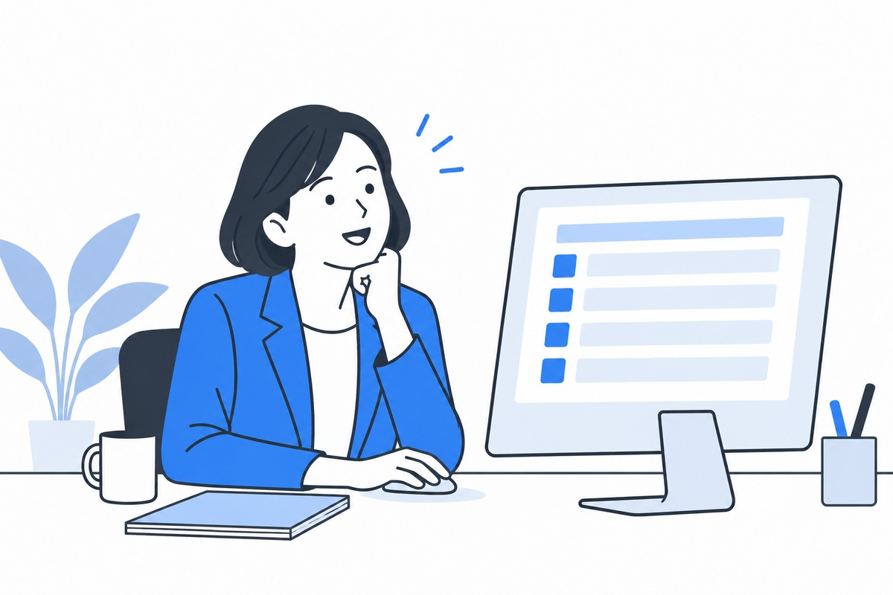
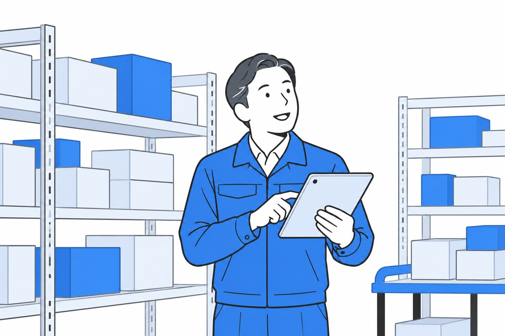
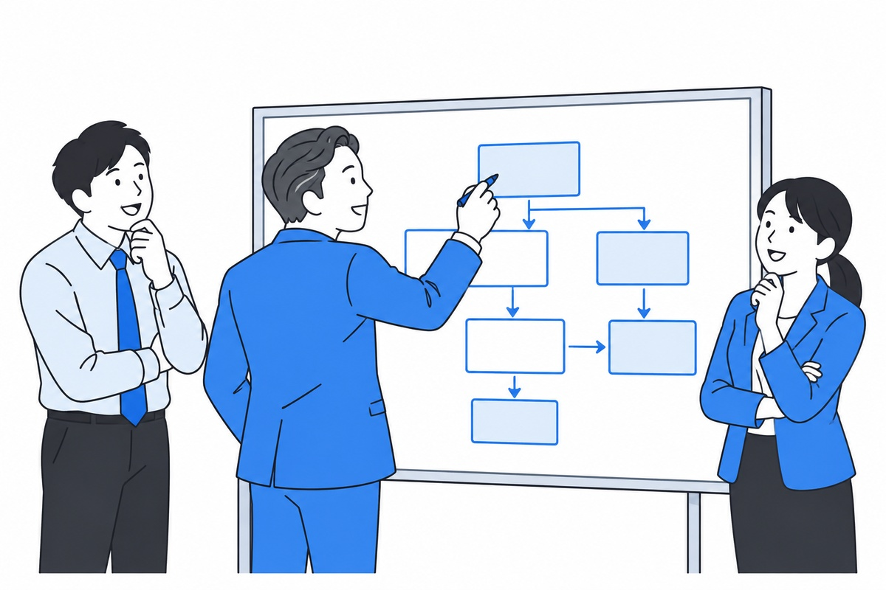

サービスの全体像
教育 → 効率化 → 利益改善。
まずは研修から始め、必要に応じて右腕AIの導入、社内システムの開発へと広げられます。3つは組み合わせることもできます。
| 段階 | 関わり方 | サービス | 目指す状態 |
|---|---|---|---|
| 01 教育 | 研修 | AI実務研修 | 御社の担当者がAIを自分で使いこなせる |
| 02 効率化 | 伴走 | 右腕AI 導入・継続支援 | 現場でAIが使い続けられる |
| 03 利益改善 | 代行 | 社内システム開発＋右腕AI実装 | 動くシステムで、外注費・管理の費用が下がる |
- 右腕AIとは
- 御社の業務ルールと情報をもとに、確認・管理・作成などの特定の業務を支援・実行するAIの仕組みです。採用や外注の代わりではなく、「経営者の右腕」として働きます。
サービス 01 研修
AI実務研修
教える・育てる。
「AIって何？」の状態から始めて大丈夫です。ChatGPT・Claudeなどの生成AIを、現場の実務で使えるところまで習得します。経営者の言葉に合わせて内容を設計し、業務で使えるルールとひな形を一緒につくり、担当者が自分で回せるところまで伴走します。
- AI実務研修
- AIへの指示の出し方の設計・指導
- 社内AI活用ルールの策定支援
- 管理職・現場担当者向け研修
ここが違います研修で終わらせず、現場で使うルールとひな形まで一緒につくります。次に何へ投資すべきかの判断材料までお渡しします。
研修の前と後
- 何に使えばいいか分からない → 業務で使えるルールが整う
- 現場が使ってくれない → 担当者が自分で回せる
- 何から始めるか整理できない → 次に何へ投資するか判断できる
進め方
- 現状分析・課題整理
- ルール・ひな形の作成、現場展開
- 定着確認・次の一手の設計
形式は、半年12回 または 2日間合宿からお選びいただけます。
こんな企業に向いています
- 研修をやったが定着しなかった
- 何から始めるかを整理したい
- 社内の理解をそろえてから導入を判断したい
料金
396,000円／人（税別）
助成金（人材開発支援助成金）が認められた場合の試算：実質 99,000円／人 ※受給を保証するものではありません
サービス 02 伴走
右腕AI 導入・継続支援
一緒に進む・定着させる。
メール返信・シフト管理・確認業務・資料作成など、繰り返しの業務を右腕AIが代替します。設計・導入したあとも2週間に1回現場に入り、課題を一緒に解きながら定着・改善を続けます。「入れて終わり」にしない継続支援です。
- 右腕AIの設計・導入
- 2週間に1回の現場での打ち合わせ
- 業務の流れの改善を継続対応
- AI活用の段階的な引き上げ支援
ここが違います「動画を見て終わり」「月1回のオンライン」ではありません。2週間に1回、現場に伺って定着まで支援します。見込みがなければ、始める前にそうお伝えします。

右腕AIに任せられること
- 反復・定型の業務（メール返信、資料作成、数値の集計）
- 報告・確認・進捗の管理
- シフトや予定の作成
変わること
- 「あの人しか分からない」がなくなる
- 社長・管理者への確認の集中がほどける
- 人にしかできない仕事に集中できる
進め方
現場の話をお聞きし、効果の大きい業務から段階的に。無理のない範囲で、定着まで伴走します。
月額料金
18万円／月（現場伴走・保守・機能改善込み）
相談中心プラン：月7万円（LINE相談・オンライン中心） ／ 初期構築費30万円は年間契約で0円
サービス 03 代行・実装
社内システム開発 ＋ 右腕AI実装
代わりにやる・仕組みを作る。
会社全体の業務を整理し、既存システムの調整や専用の仕組みの開発を行います。配車表や帳票、シフトなど、バラバラだった情報をひとつにつなぎ、更新すれば関連情報が連動する状態に。「動くシステム」として御社の業務に組み込みます。
- AIによる業務自動化の開発・実装
- 社内アプリ・業務システム制作
- いまお使いの仕組みとAIの連携・自動化
- 紙・Excel運用のデジタル置き換え
ここが違います提案書ではなく、現場がそのまま使える「動くシステム」を納品します。外注していた業務を社内に戻し、外注費・管理の費用を構造から減らします。

つくるもの
- 社内アプリ・業務システム
- 右腕AIの実装
- いまお使いの仕組みとの連携
変わること
- 紙・Excelの運用を、そのまま使える仕組みに
- 外注していた業務を社内で回せる
- 情報がつながり、確認の手間が減る
進め方
現場固有の流れをお聞きし、必要な機能と範囲を一覧にします。無理のない範囲から段階的に進めます。
料金
50万円〜
業務範囲・規模により個別にお見積もりします
どれから始める？
御社の「いま」から選べます。
迷ったら、無料のご相談で一緒に整理します。組み合わせも可能です。
| いまの状態 | おすすめ |
|---|---|
| AIをまだ使っていない。紙・Excel・口頭が中心 | 研修（AI実務研修） |
| 同じ作業の繰り返しが多い | 伴走（右腕AI 導入・継続支援） |
| 確認・承認が社長や管理者に集まる | 伴走（右腕AI 導入・継続支援） |
| 現場の仕組みごと変えたい。外注費を減らしたい | 代行（社内システム開発） |
※ 上記のほか、広告・集客ページ（LP）の内製化支援、社内のデジタル環境整備、OA機器選びの補助などもご相談いただけます。
ご相談からの流れ
ご納得いただいてから、
はじまります。
-
現状とお悩みをお聞かせください
費用はかかりません。準備も不要です。次の4点を中心にお聞きします。
- 採用予定・人件費の状況
- 外注している業務の有無
- 残業の実態（時間・頻度）
- 取りこぼしている売上機会

-
利益改善の見込みを試算します
お聞きした内容をもとに、どの業務から手をつけると効果が大きいかを整理します。
「利益改善が見込めない場合は、始める前にそうお伝えします。」

-
進め方とお見積もりをお示しします
何を、どの順番で、どのくらいの期間・費用で進めるかを工程表でお見せします。費用対効果をご確認いただいてから、ご判断ください。無理な売り込みはしません。

-
ご納得いただいてからご契約
内容と費用にご納得いただいてから、ご契約となります。ご契約後は2週間に1回お伺いし、定着するまで隣で伴走します。研修・伴走・代行の組み合わせは、御社の状況に合わせて柔軟に設計します。